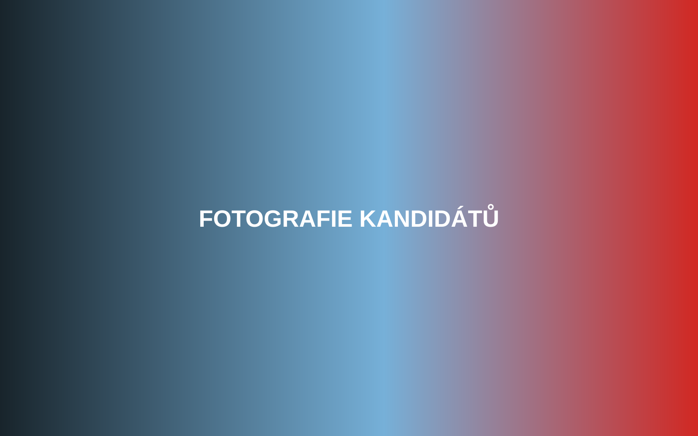

Kandidát / kandidátka
Jmeno Prijmeni
Profese / oblast
Zde bude biografie kandidáta. Doplňte zkušenosti, profesní život, vztah k Bučovicím, motivaci kandidovat a konkrétní témata, kterým se chce věnovat.

Kandidát / kandidátka
Profese / oblast
Zde bude biografie kandidáta. Doplňte zkušenosti, profesní život, vztah k Bučovicím, motivaci kandidovat a konkrétní témata, kterým se chce věnovat.